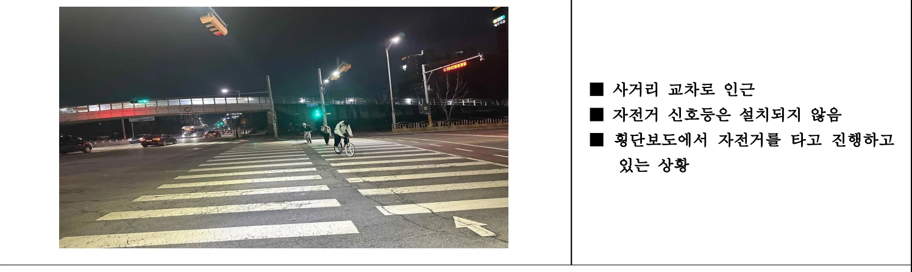

771. Hai câu nào là đúng nhất về thiết bị an toàn giao thông và hành động đi kèm theo trong tình huống sau?

- ①Vạch sang đường dành cho người đi bộ - Có thể đi xe đạp qua.
- ②Vạch sang đường dành cho xe đạp - Khi băng qua đường có vạch sang đường dành cho xe đạp, có thể chạy xe đạp băng qua.
- ③Đèn tín hiệu giao thông dành cho người đi bộ - Nếu nhấp nháy xanh thì người đi bộ phải nhanh chóng bắt đầu băng qua đường.
- ④Đèn tín hiệu giao thông dành cho người đi bộ - Nếu không có đèn tín hiệu giao thông dành cho xe đạp thì xe đạp thực hiện theo hướng dẫn của đèn tín hiệu giao thông dành cho người đi bộ.
- ⑤Đèn tín hiệu dành cho xe - Nếu không có đèn tín hiệu giao thông dành cho xe đạp thì xe đạp thực hiện theo hướng dẫn của đèn tín hiệu giao thông dành cho xe.
Xem đáp án
Đáp án
② Vạch sang đường dành cho xe đạp - Khi băng qua đường có vạch sang đường dành cho xe đạp, có thể chạy xe đạp băng qua.
④ Đèn tín hiệu giao thông dành cho người đi bộ - Nếu không có đèn tín hiệu giao thông dành cho xe đạp thì xe đạp thực hiện theo hướng dẫn của đèn tín hiệu giao thông dành cho người đi bộ.
Căn cứ
Khi đèn xanh giữa đèn giao thông dành cho người đi bộ đang nhấp nháy, người đi bộ không được bắt đầu băng qua đường và người đi bộ qua đường phải nhanh chóng hoàn thành việc băng qua hoặc dừng băng qua đường và quay trở lại vỉa hè (Quy tắc thi hành Luật Giao thông đường bộ [Phụ lục 2]). Khi đi xe đạp phải tuân theo chỉ dẫn của đèn giao thông ở những nơi chưa lắp đặt đèn giao thông cho xe đạp. Nếu đèn tín hiệu qua đường dành cho xe đạp không được lắp đặt trên đường băng qua dành cho xe đạp thì người đi xe đạp và thiết bị di chuyển cá nhân phải tuân theo chỉ dẫn của đèn tín hiệu đi bộ (Quy tắc thi hành luật giao thông đường bộ [Phụ lục 2]).
Phần căn cứ là bản dịch máy để tham khảo.